Битвы · Командующие · Ход · Итоги
1941 — 1945П.М. Гаврилов, И.Н. Зубачев, Е.М. Фомин, А.М. Кижеватов
С первых часов войны гарнизон Брестской крепости оказался в окружении. Немецкие войска, имея многократное превосходство, рассчитывали взять крепость за несколько часов. Однако бойцы под командованием Гаврилова, Зубачева, Фомина и Кижеватова организовали упорную оборону. Отдельные группы сражались в подвалах и казематах более месяца, даже когда крепость официально уже была оставлена. Оборона стала символом стойкости советских солдат в первые дни войны.
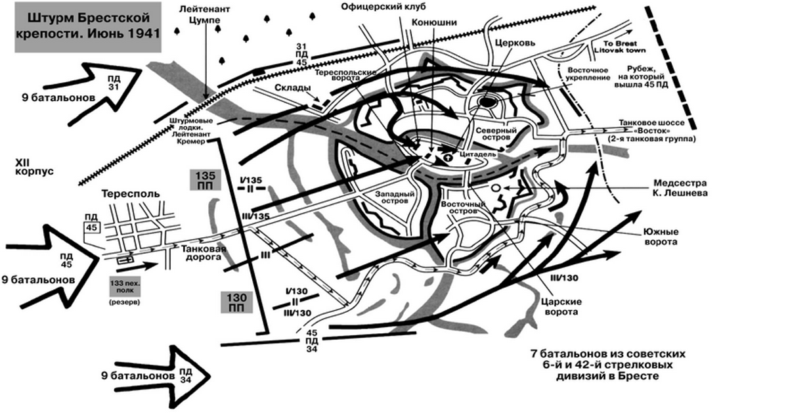
Схема обороны Брестской крепости, 1941 г.
Сдача крепости.
С.К. Тимошенко (Западный фронт), В.Я. Качалов, В.А. Хоменко, С.А. Калинин, И.И. Масленников, К.К. Рокоссовский, А.И. Еременко (Брянский фронт).
Немецкая группа армий «Центр» стремилась прорваться к Москве через Смоленск. Советские войска Западного, Резервного и Брянского фронтов вели тяжёлые оборонительные бои, неоднократно контратакуя. В районе Смоленска развернулось крупное танковое сражение. Особую роль сыграли соединения Рокоссовского и Еременко. Несмотря на отступление, советское командование впервые заставило немцев перейти к обороне на этом направлении.
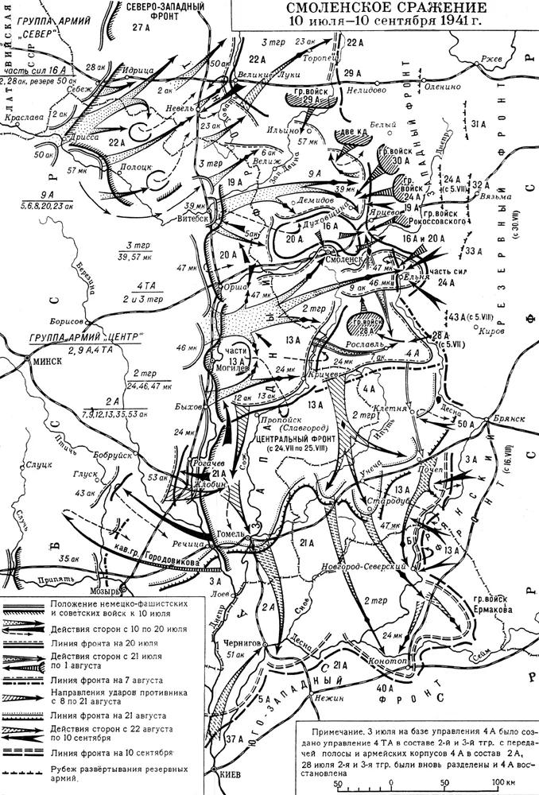
Карта боевых действий на Смоленском направлении, 1941 г.
Предпринята первая попытка контрнаступления, немецкие войска впервые перешли к обороне.
Г.К. Жуков (Западный фронт), И.С. Конев (Калининский фронт), С.К. Тимошенко (Юго-Западный фронт), К.К. Рокоссовский (16-я армия), И.В. Панфилов (316-я стрелковая дивизия), В.В. Клочков (политрук 4-й роты), И.В. Болдин.
Немецкое командование начало операцию «Тайфун» с целью захвата Москвы. В октябре 1941 года враг прорвал оборону и окружил крупные силы советских войск под Вязьмой и Брянском. Критический момент наступил в конце октября – ноябре, когда бои шли в 80–100 км от столицы. Дивизия Панфилова насмерть стояла на Волоколамском направлении. 5–6 декабря 1941 года Красная Армия перешла в контрнаступление, отбросив врага на 150–400 км. Это было первое крупное поражение вермахта.
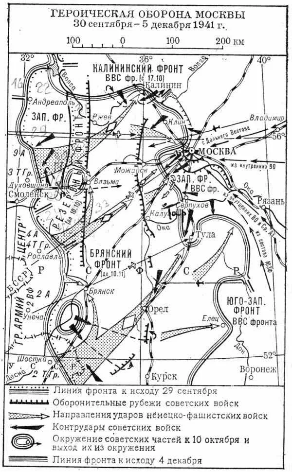
Великая битва под Москвой. Карта обороны и разгрома немецких войск.
Крах стратегии блицкрига, укрепление международного авторитета СССР и ускорение создания антигитлеровской коалиции.
Г.К. Жуков (упомянут в файле в этом контексте).
8 сентября 1941 года немецкие войска замкнули кольцо вокруг Ленинграда. Началась 872-дневная блокада. Единственной связью с большой землёй стала «Дорога жизни» через Ладожское озеро. Город подвергался постоянным обстрелам и бомбардировкам, свирепствовал голод. Несмотря на это, ленинградцы продолжали работать и сражаться. Неоднократные попытки прорыва блокады увенчались успехом лишь в январе 1943 года (операция «Искра»), а полное освобождение произошло 27 января 1944 года.
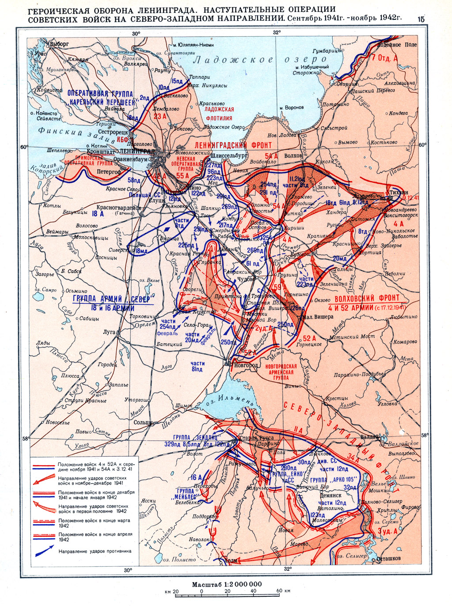
Карта блокады Ленинграда 1941–1944 гг.
Полное снятие блокады 27 января 1944 года. В файле указан как период, итог не выделен отдельно.
Не указан в файле.
Немецкое командование стремилось соединиться с финскими войсками восточнее Ленинграда и полностью замкнуть блокаду. В ноябре 1941 года советские войска нанесли контрудар под Тихвином. В ходе упорных боёв город был освобождён, а немецкие части отброшены за реку Волхов. Это сорвало планы противника и не позволило создать второе кольцо блокады.
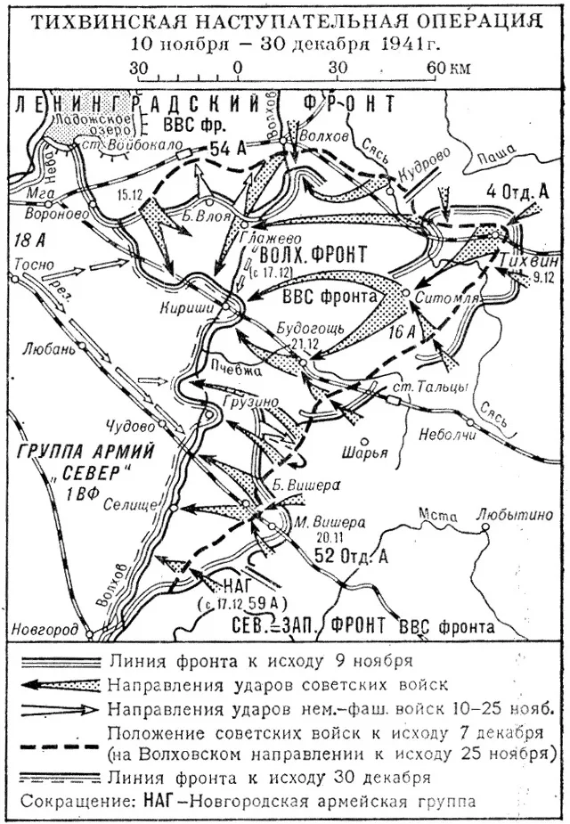
Тихвинская наступательная операция, 10 ноября – 30 декабря 1941 г.
Предотвращение соединения немецких и финских войск, полная блокада Ленинграда.
Петров И.Е. (Приморская армия), Ф.П. Октябрьский (Черноморский флот).
Севастополь стал главной базой Черноморского флота. С октября 1941 года началась героическая оборона города. Немецкие войска предприняли несколько штурмов, но защитники при поддержке кораблей флота держались 250 дней. Лишь в июле 1942 года, после ожесточённых боёв и больших потерь, город был оставлен. Оборона Севастополя сковала крупные силы врага на южном направлении.
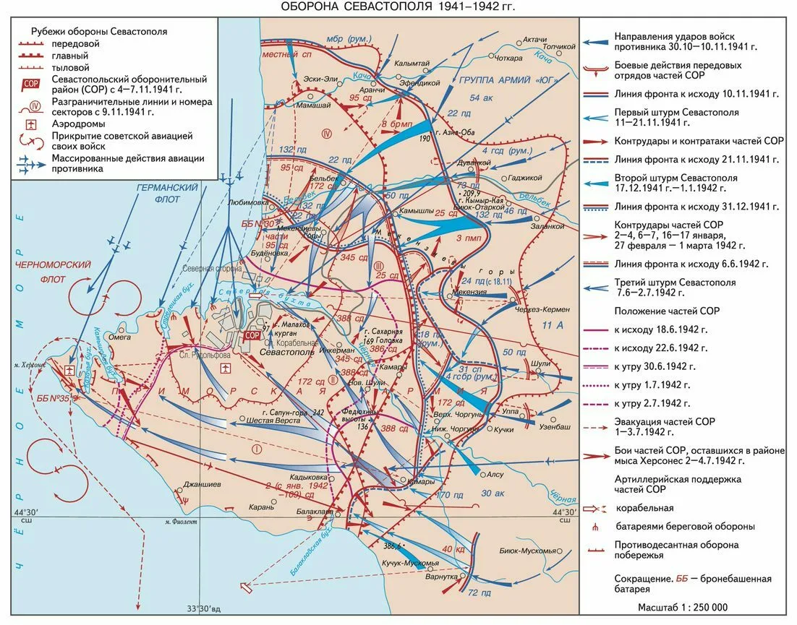
Схема обороны Севастополя, 5 ноября 1941 – 4 июля 1942 г.
Потеря Севастополя.
С.К. Тимошенко (Юго-Западный фронт), Р.Я. Малиновский (Южный фронт).
Советское командование планировало крупное наступление на Харьков, чтобы освободить город и создать условия для дальнейшего продвижения. Однако немецкие войска упредили удар, окружив значительные силы Юго-Западного фронта. В результате операции советские войска потерпели тяжёлое поражение, потеряв две армии. Стратегическая инициатива на южном направлении перешла к вермахту, что открыло путь к Сталинграду и Кавказу.
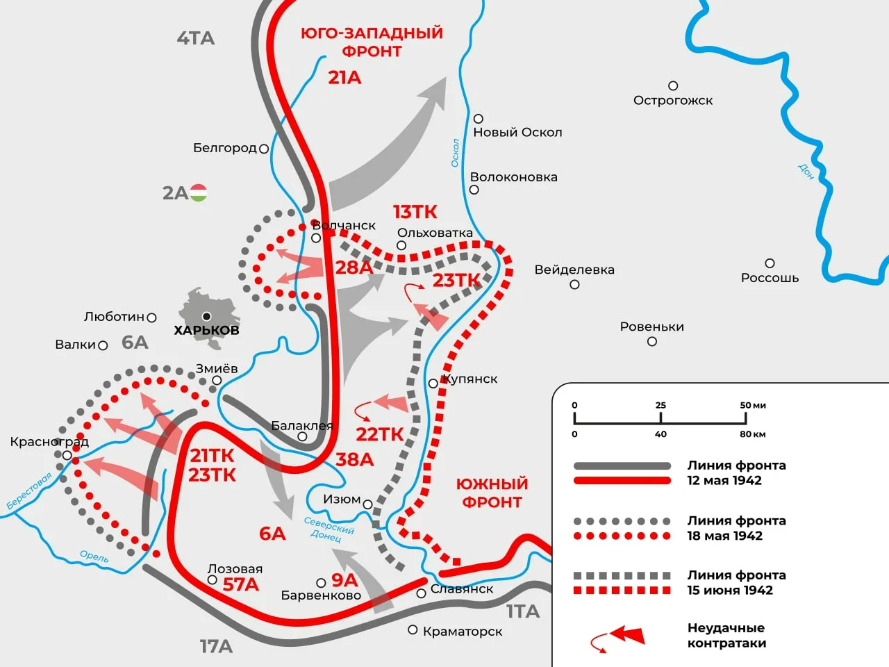
Харьковская наступательная операция, май 1942 г.
Поражение, уничтожены войска двух армий, стратегическая инициатива перешла к немецкому командованию.
В.Д. Соколовский, М.А. Пуркаев.
В ходе зимнего контрнаступления 1941–1942 годов советские войска стремились разгромить группу армий «Центр» и освободить Ржев и Вязьму. Бои приняли затяжной и крайне кровопролитный характер. Несмотря на огромные потери, полностью выполнить задачу не удалось, но противник был вынужден перейти к обороне на этом участке. Ржевско-Вяземский выступ стал символом ожесточённых и безуспешных атак Красной Армии.
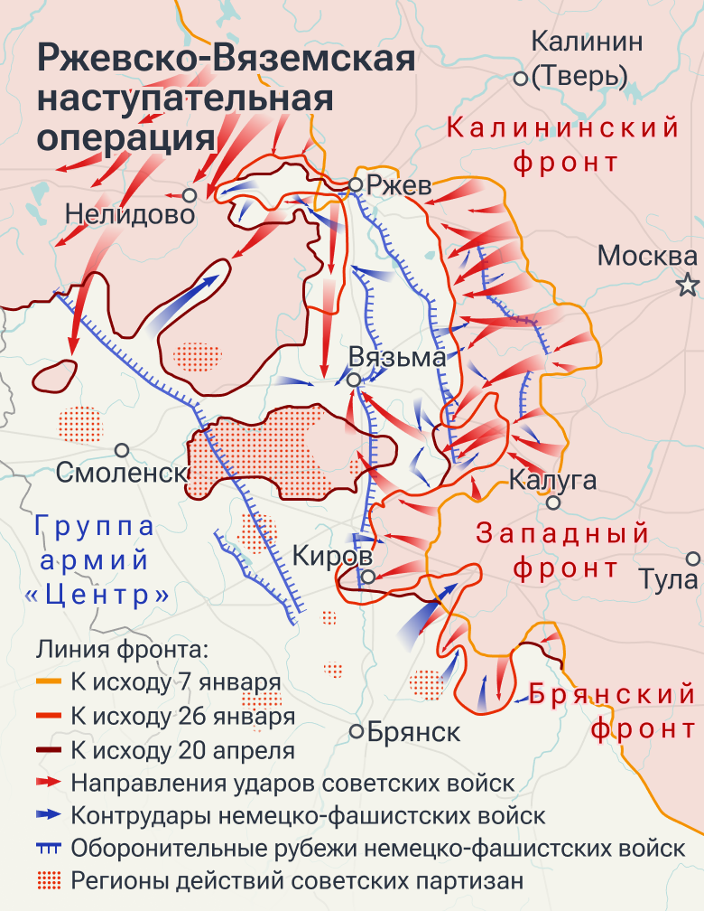
Ржевско-Вяземская операция, 1942 г.
Освобождение городов Ржев и Вязьма.
К.К. Рокоссовский (Донской фронт), Н.Ф. Ватутин (Юго-Западный фронт), А.И. Ерёменко (Сталинградский фронт), В.И. Чуйков (62-я армия), М.С. Шумилов (64-я армия), Я.Ф. Павлов (сержант, участник обороны дома Павлова), Р.Я. Малиновский.
Летом 1942 года немецкие войска вышли к Сталинграду, стремясь захватить город и перерезать Волгу. Начались упорные уличные бои, особенно в районе «дома Павлова». 19 ноября 1942 года Красная Армия перешла в контрнаступление (операция «Уран»), окружив 330-тысячную группировку врага. В январе–феврале 1943 года в ходе операции «Кольцо» окружённые войска были разгромлены, фельдмаршал Паулюс взят в плен. Это стало началом коренного перелома в войне.
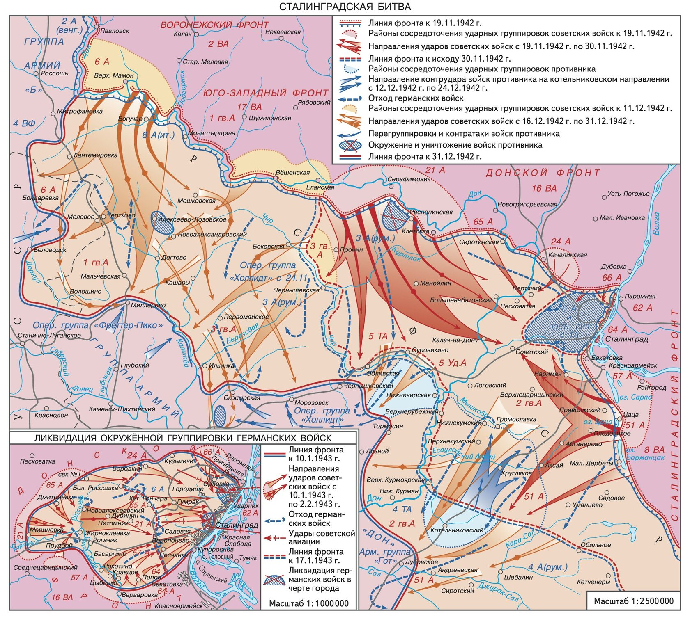
Сталинградская битва. Карта боевых действий 1942–1943 гг.
Начало коренного перелома в войне, складывание антигитлеровской коалиции.
Не указаны в файле.
Летом 1942 года немецкие войска начали наступление на Кавказ, стремясь захватить нефтяные промыслы Грозного и Баку. Советские войска вели тяжёлые оборонительные бои, остановив врага у Орджоникидзе и на перевалах Главного Кавказского хребта. В январе 1943 года началось контрнаступление, в результате которого были освобождены значительные территории Кавказа и Ростовская область. Угроза потери нефтяных районов была ликвидирована.
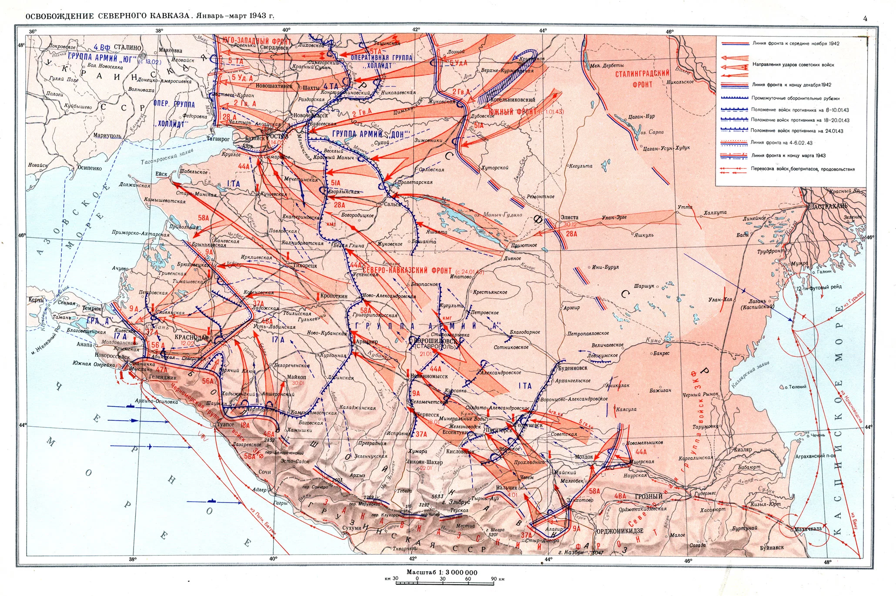
Битва за Кавказ, 1942–1943 гг.
Освобождение Кавказа и Ростовской области.
Л.А. Говоров (Ленинградский фронт), К.А. Мерецков (Волховский фронт).
Целью операции было прорвать блокаду Ленинграда. Войска Ленинградского и Волховского фронтов нанесли встречные удары южнее Ладожского озера. Несмотря на тяжёлые бои и большие потери, 18 января 1943 года кольцо блокады было прорвано. Был создан коридор шириной 8–11 км, что позволило наладить железнодорожное сообщение с городом. Это стало первым крупным успехом под Ленинградом.
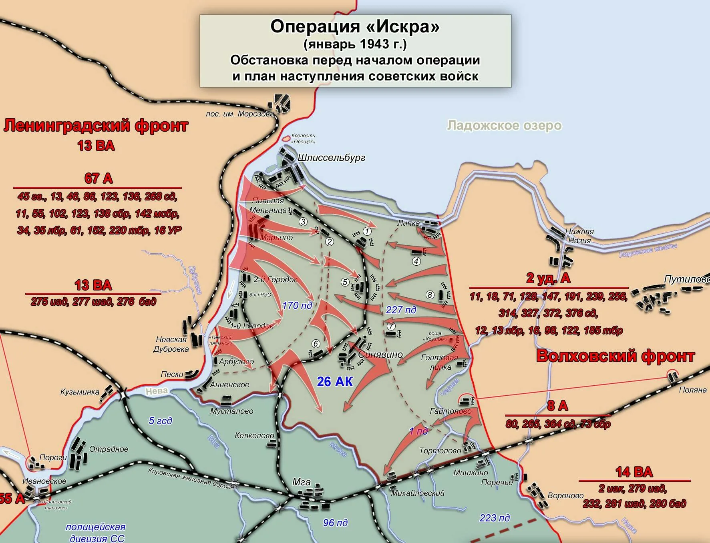
Операция «Искра». Прорыв блокады Ленинграда, январь 1943 г.
Прорыв блокады Ленинграда (18 января 1943 г.).
К.К. Рокоссовский (Центральный фронт), Н.Ф. Ватутин (Воронежский фронт), П.А. Ротмистров, И.С. Конев (Степной фронт), И.Н. Кожедуб (лётчик-истребитель).
Немецкое командование планировало операцию «Цитадель» — наступление на Курском выступе. Советская разведка своевременно вскрыла планы врага, и оборона была подготовлена. 5 июля 1943 года немцы перешли в наступление, но завязли в глубоко эшелонированной обороне. 12 июля под Прохоровкой произошло крупнейшее танковое сражение войны. В тот же день началось контрнаступление советских войск (операции «Кутузов» и «Полководец Румянцев»). Орёл, Белгород и Харьков были освобождены.
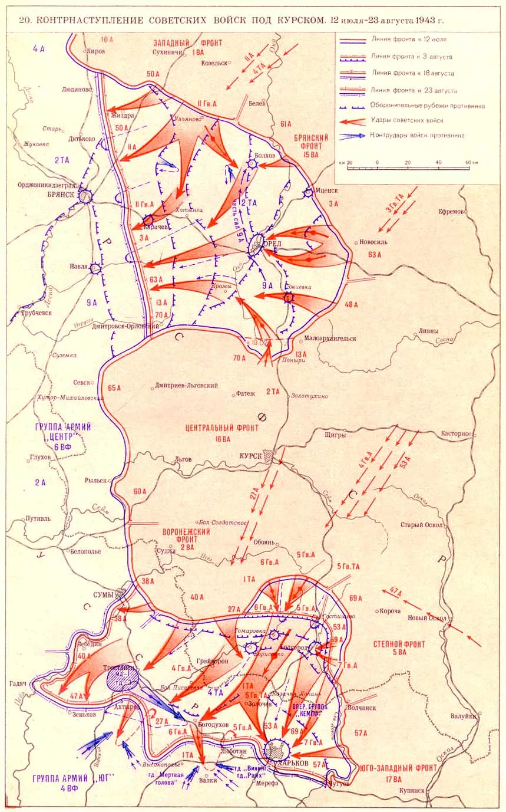
Курская битва. Карта боевых действий, июль–август 1943 г.
Освобождение Орла, Харькова и Белгорода, дан первый артиллерийский салют с начала войны.
Г.К. Жуков, А.М. Василевский.
После Курской битвы Красная Армия устремилась к Днепру. Немецкое командование создало мощный оборонительный рубеж — «Восточный вал». Советские войска с ходу форсировали Днепр на многих участках, захватывая плацдармы. Особенно ожесточённые бои шли за Киев, который был освобождён в ноябре 1943 года. Битва за Днепр завершила коренной перелом в войне и создала условия для освобождения Правобережной Украины.
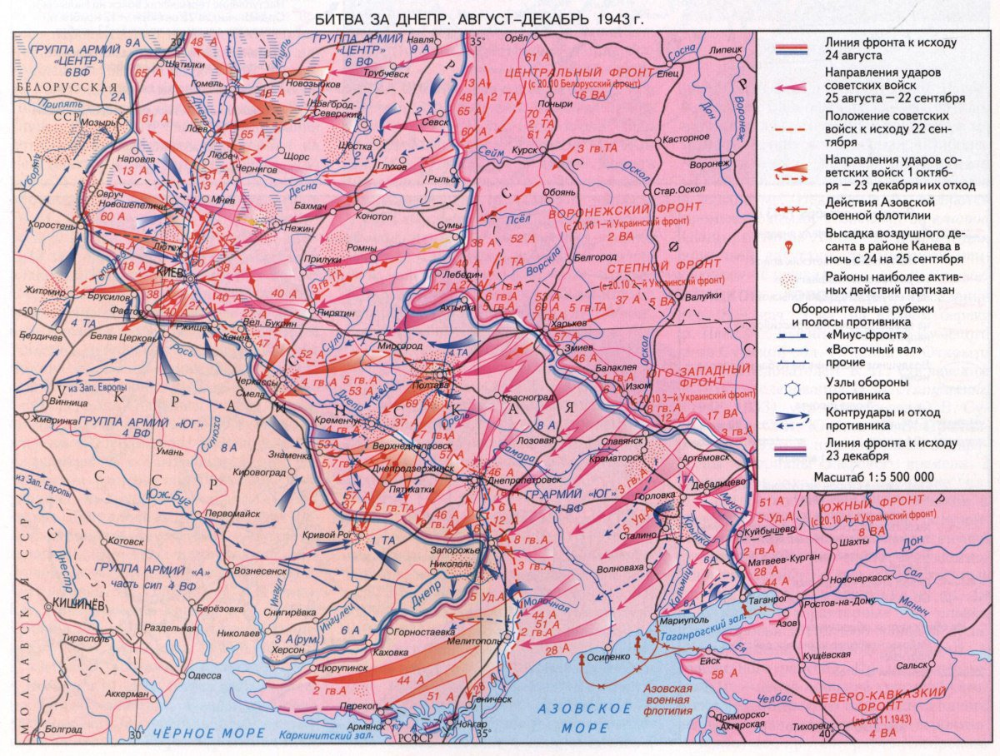
Битва за Днепр, август–декабрь 1943 г.
Форсирование Днепра, освобождение Киева, битва завершила коренной перелом в войне.
Л.А. Говоров (Ленинградский фронт), К.А. Мерецков (Волховский фронт), М.М. Попов (2-й Прибалтийский фронт).
В январе 1944 года советские войска начали наступление под Ленинградом и Новгородом. В ходе упорных боёв немецкая группа армий «Север» была разгромлена и отброшена от города. 27 января 1944 года блокада Ленинграда была полностью снята. Город впервые за 872 дня почувствовал свободу. Операция позволила освободить значительную часть Ленинградской области.
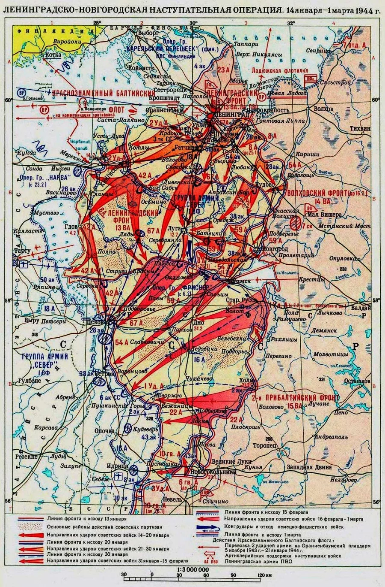
Ленинградско-Новгородская операция, январь 1944 г.
27 января 1944 г. — полное снятие блокады Ленинграда.
Н.Ф. Ватутин, И.С. Конев.
Советские войска продолжали освобождение Правобережной Украины. В январе–феврале 1944 года в районе Корсуни были окружены и разгромлены крупные силы врага. В марте началось наступление, в ходе которого советские войска вышли к Карпатам. Были освобождены Винница, Житомир, Ровно и другие города. Противник понёс тяжёлые потери.
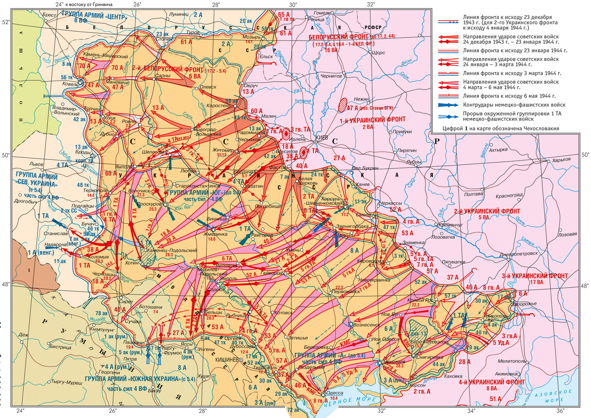
Днепровско-Карпатская операция, 1943–1944 гг.
Освобождение Правобережной Украины.
Ф.И. Толбухин, А.И. Ерёменко, Ф.С. Октябрьский, Р.Я. Малиновский.
В марте 1944 года советские войска начали наступление на юге Украины. Одесса была освобождена 10 апреля. В апреле–мае развернулась Крымская операция. Немецкие войска, блокированные в Крыму, оказывали упорное сопротивление, но были разгромлены. 9 мая 1944 года был освобождён Севастополь. Крым полностью вернулся под контроль СССР.
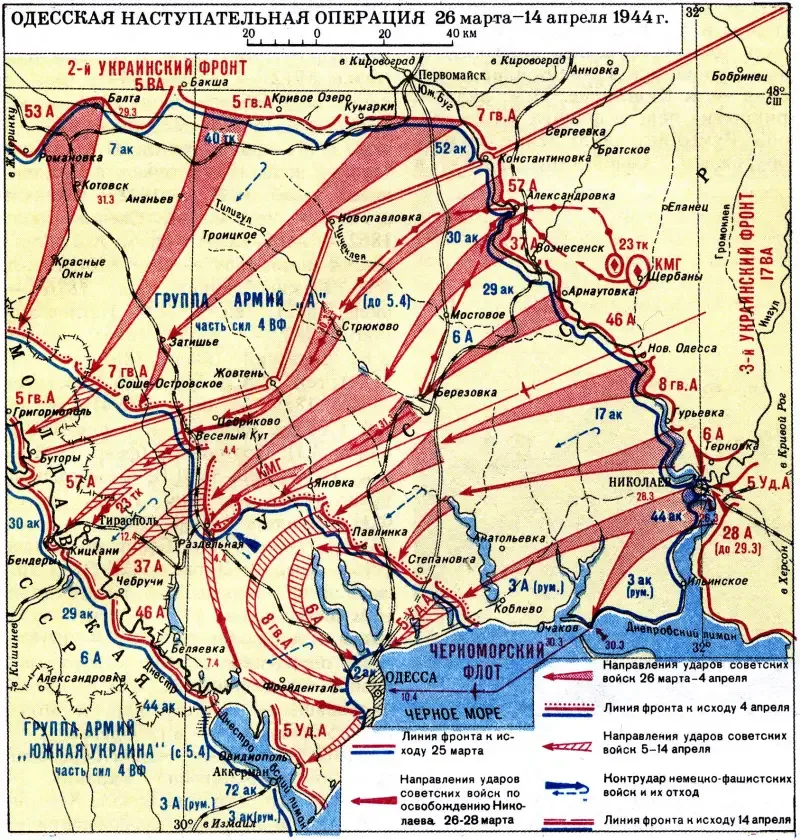
Крымская наступательная операция, 1944 г.
Освобождение Одессы и Крыма, 9 мая 1944 г. — освобождение Севастополя.
Л.А. Говоров (Ленинградский фронт), К.А. Мерецков (Карельский фронт).
Целью операции было вывести Финляндию из войны. Советские войска нанесли удары на Карельском перешейке и в Южной Карелии. Были освобождены Выборг и Петрозаводск. Финское правительство, осознав безнадёжность сопротивления, пошло на переговоры. В сентябре 1944 года было подписано перемирие между Финляндией, СССР и Великобританией.
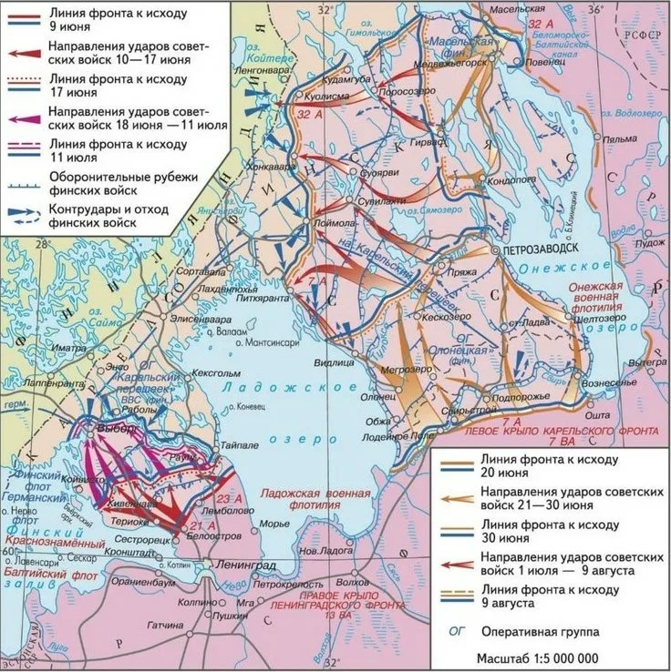
Выборгско-Петрозаводская операция, 1944 г.
Подписано перемирие между Финляндией, СССР и Великобританией.
И.Х. Баграмян (разработчик плана), К.К. Рокоссовский, И.Д. Черняховский, Г.Ф. Захаров, Г.К. Жуков.
Одна из крупнейших наступательных операций в истории. Советские войска нанесли удары по группе армий «Центр» на территории Белоруссии. Были освобождены Витебск, Орша, Могилёв, Минск (3 июля 1944 года). В «Минском котле» оказались окружены крупные силы врага. Наступление продолжилось в Литве и Польше, советские войска вышли на довоенную границу СССР. Операция «Багратион» стала триумфом советского военного искусства.
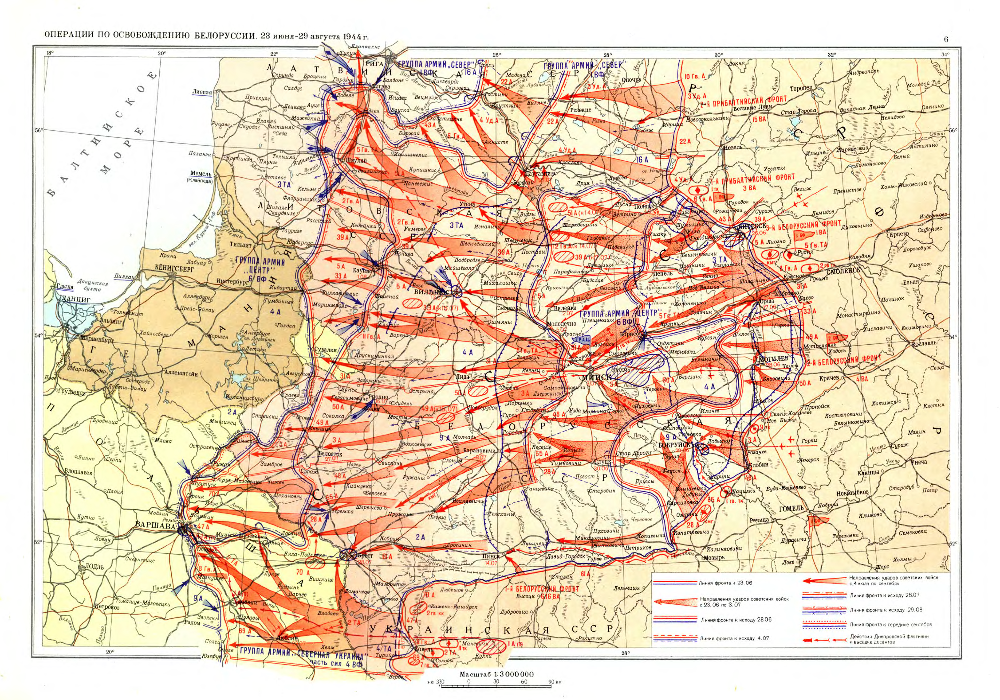
Белорусская наступательная операция «Багратион», 1944 г.
Освобождение Минска, Львова, большей части Польши, выход на довоенную границу СССР.
И.С. Конев, И.Е. Петров.
Советские войска 1-го Украинского фронта нанесли удар в Западной Украине. Были освобождены Львов, Перемышль и другие города. Форсировав Вислу, советские войска захватили Сандомирский плацдарм, который стал важным рубежом для дальнейшего наступления на Берлин. Противник понёс серьёзные потери.
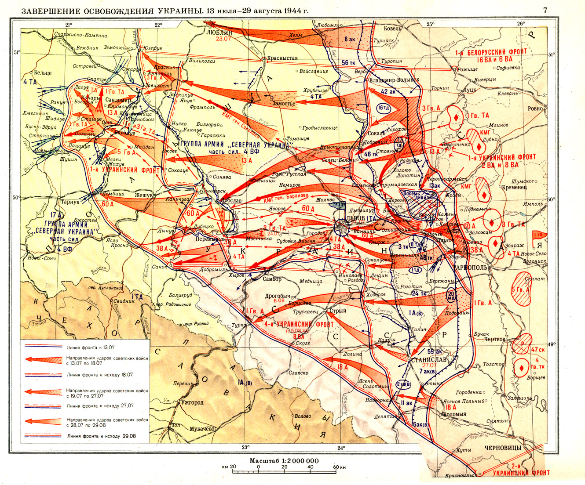
Львовско-Сандомирская операция, 1944 г.
Освобождение Западной Украины.
Р.Я. Малиновский, Ф.И. Толбухин.
В августе 1944 года советские войска начали Ясско-Кишиневскую операцию. Была окружена и разгромлена крупная немецко-румынская группировка. 24 августа Румыния объявила о выходе из войны и повернула оружие против Германии. Советские войска вошли в Болгарию, которая также вышла из войны. Освобождение Молдавии завершилось.
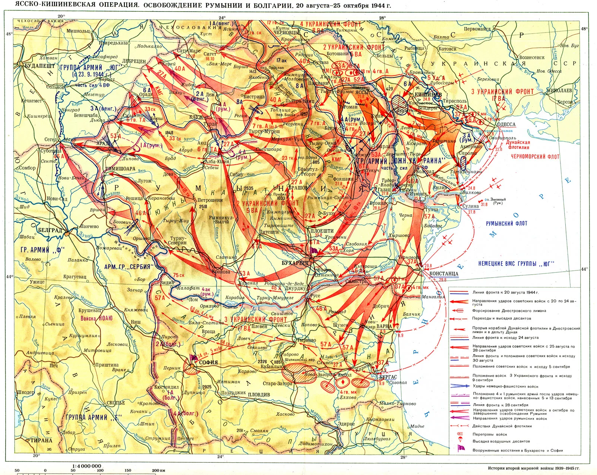
Ясско-Кишиневская операция, 1944 г.
Освобождение Молдовской ССР, Румыния и Болгария вышли из войны.
А.М. Василевский, Л.А. Говоров.
Советские войска нанесли удары по немецкой группе армий «Север» в Прибалтике. Были освобождены Литва, Эстония и большая часть Латвии. Остатки немецких войск были блокированы в Курляндском котле. Финляндия, видя поражение Германии, объявила ей войну. Операция завершила освобождение Прибалтики.
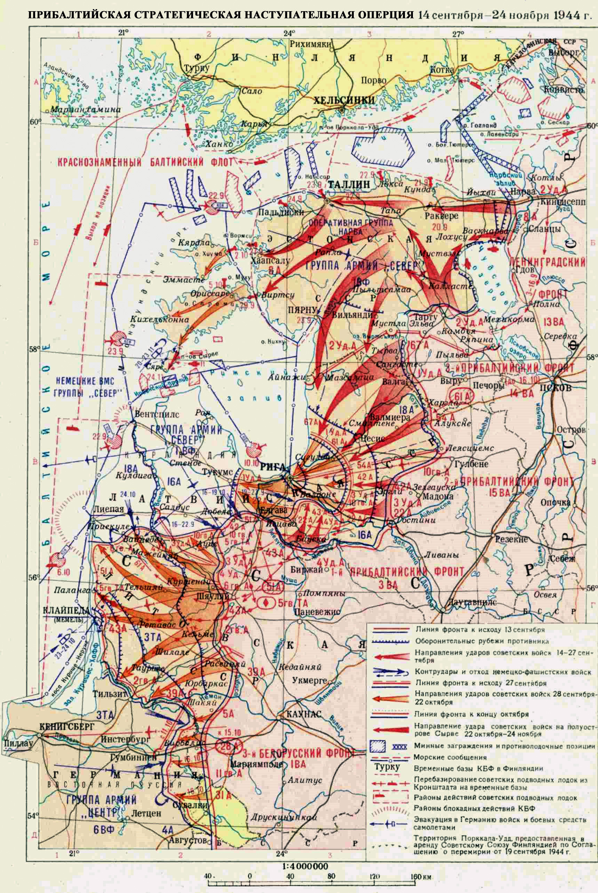
Прибалтийская операция, 1944 г.
Освобождение Литовской, Эстонской и большей части Латвийской ССР. Курляндский котёл. Финляндия вынуждена объявить войну Германии.
И.Е. Петров, Р.Я. Малиновский.
Советские войска продвигались в Восточные Карпаты и на Балканы. В ходе Белградской операции совместно с югославскими партизанами был освобождён Белград (20 октября 1944 года). Были освобождены Закарпатская Украина и значительная часть Венгрии. Венгрия объявила войну Германии.
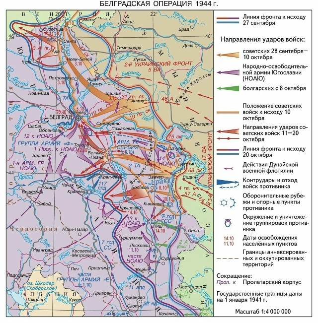
Белградская операция, 1944 г.
Освобождение Венгрии, Закарпатской Украины. Венгрия объявила войну Германии.
К.А. Мерецков.
Советские войска Карельского фронта нанесли удар в Заполярье. Были освобождены Печенга и Киркенес (Норвегия). Немецкие войска были выбиты из северных районов. Угроза северным морским путям СССР была ликвидирована. Советские войска вступили на территорию Норвегии.
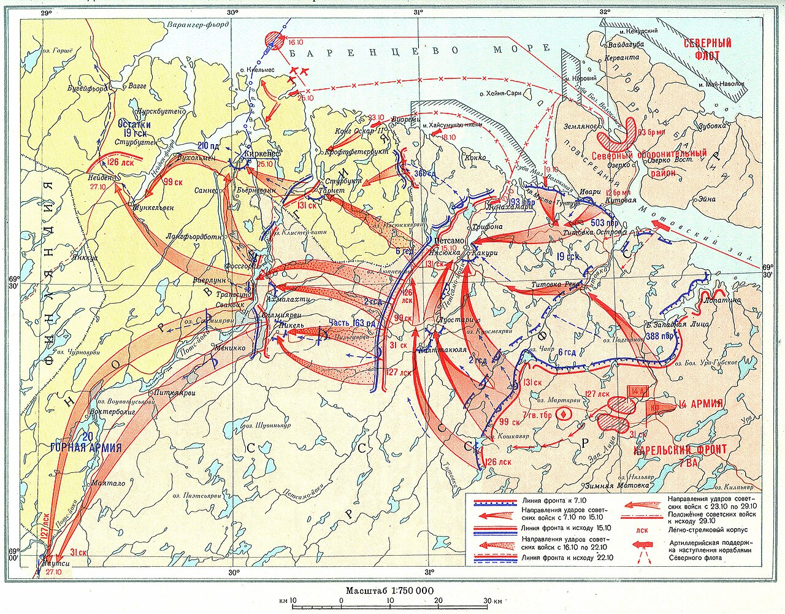
Петсамо-Киркенесская операция, октябрь 1944 г.
Освобождение Печенги (Заполярье), ликвидация угрозы северным морским путям СССР. Советские войска вошли в Норвегию.
Р.Я. Малиновский, Ф.И. Толбухин.
Советские войска начали наступление на Будапешт в октябре 1944 года. Город был окружён в декабре. Немецко-венгерская группировка оказывала упорное сопротивление. Бои за Будапешт продолжались до февраля 1945 года. Город был взят, что ускорило освобождение Венгрии и открыло путь на Вену.
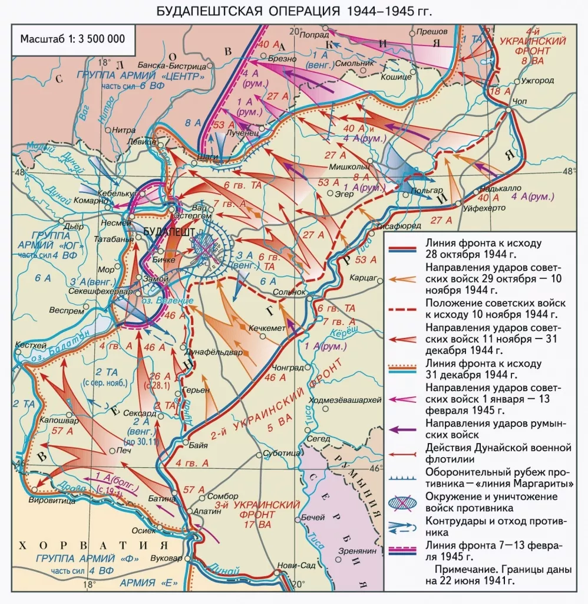
Будапештская операция, 1944–1945 гг.
Освобождение Будапешта.
Г.К. Жуков, И.С. Конев.
Советские войска начали наступление от Вислы к Одеру. Были освобождены Варшава (17 января 1945 года), Краков, Познань. Советские войска вышли к Одеру, создав плацдармы для удара по Берлину. Наступление было стремительным и успешным.
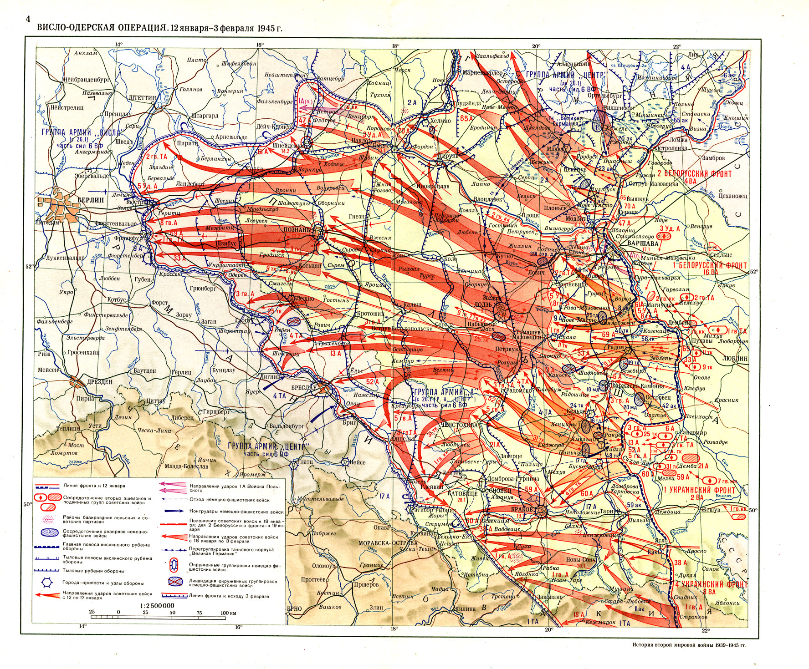
Висло-Одерская операция, 1945 г.
Освобождение Варшавы.
К.К. Рокоссовский, Г.К. Жуков.
Советские войска нанесли удар в Восточной Померании. Были освобождены Данциг (Гданьск) и Гдыня. Противник был отброшен за Одер. Операция обеспечила безопасность флангов советских войск, наступавших на Берлин.
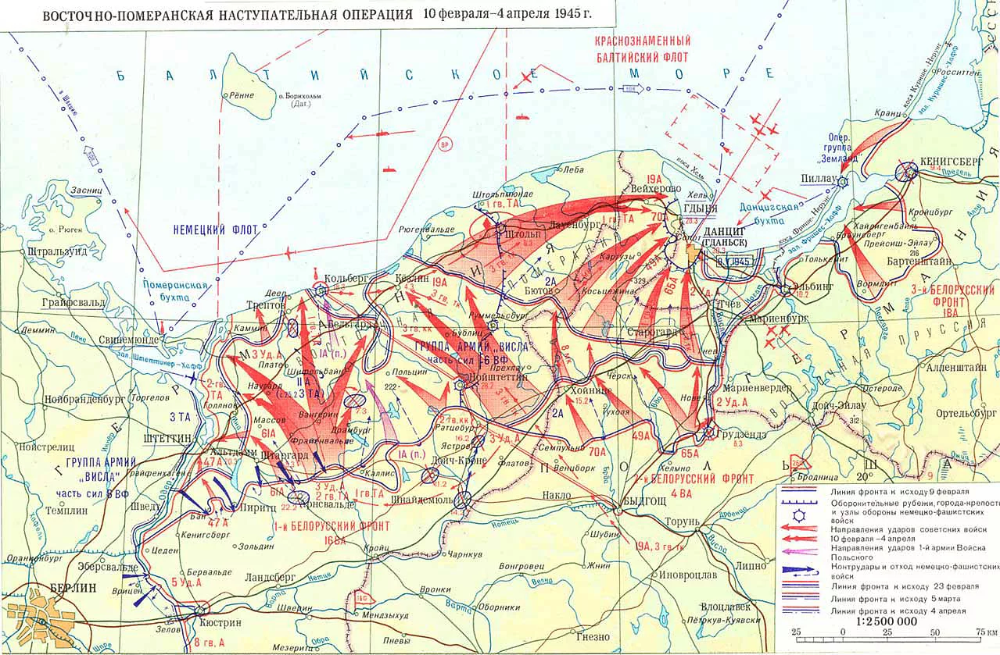
Восточно-Померанская операция, 1945 г.
Освобождение Данцига и Гдыни, форсирование Одера.
К.К. Рокоссовский, И.Д. Черняховский, А.М. Василевский.
Советские войска начали наступление в Восточной Пруссии. Бои носили крайне ожесточённый характер. 9 апреля 1945 года был взят Кёнигсберг. Остатки немецких войск капитулировали. Восточно-Прусская группировка врага была полностью разгромлена.
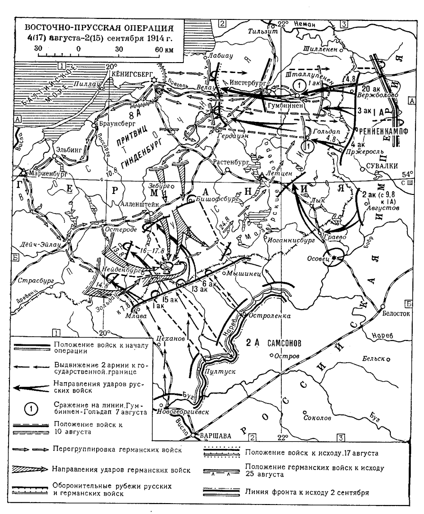
Восточно-Прусская операция, 1945 г.
Освобождение Кенигсберга.
Ф.И. Толбухин, Р.Я. Малиновский.
Советские войска наступали на Вену. Немецкое командование стремилось превратить город в неприступную крепость. Однако советские войска обошли город с флангов и 13 апреля 1945 года освободили Вену. Австрия была освобождена от немецкой оккупации.
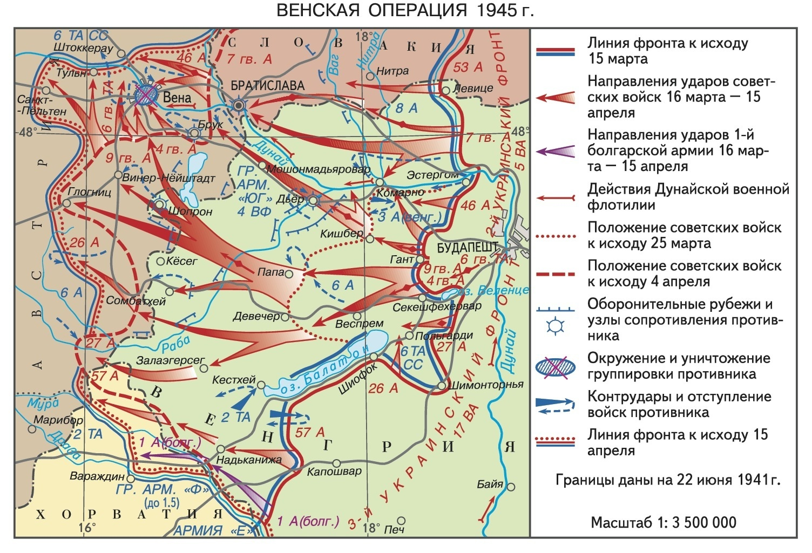
Венская операция, 1945 г.
Освобождение Вены.
М.А. Егоров, М.В. Кантария (сержанты, водрузившие Знамя Победы над рейхстагом), Г.К. Жуков, И.С. Конев, К.К. Рокоссовский.
Заключительная операция Великой Отечественной войны. Советские войска 1-го и 2-го Белорусских и 1-го Украинского фронтов начали штурм Берлина 16 апреля 1945 года. После упорных боёв 30 апреля 1945 года сержанты Егоров и Кантария водрузили Знамя Победы над рейхстагом. 2 мая 1945 года Берлин капитулировал. 8 мая 1945 года был подписан Акт о безоговорочной капитуляции Германии.
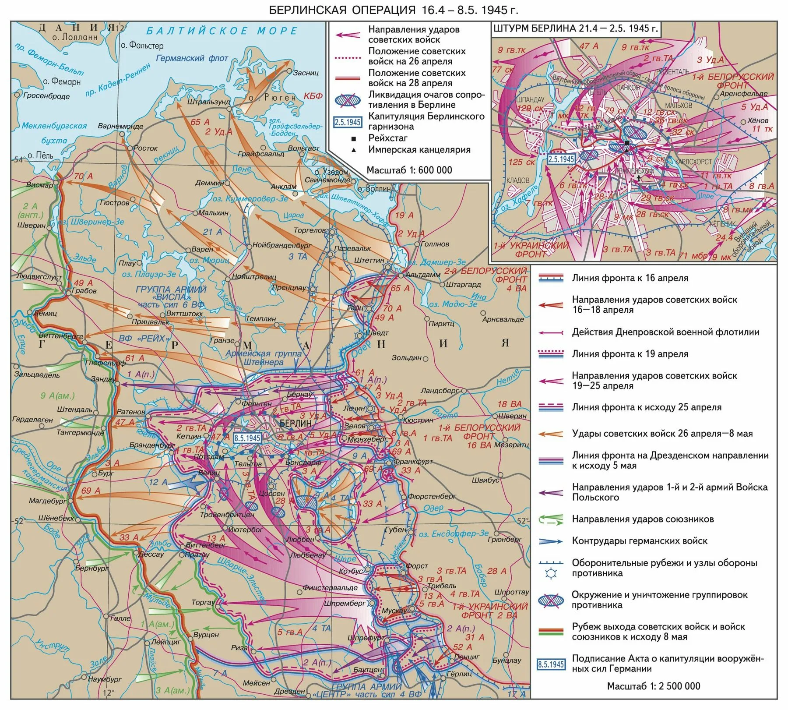
Берлинская стратегическая наступательная операция, 1945 г.
Взятие Берлина.